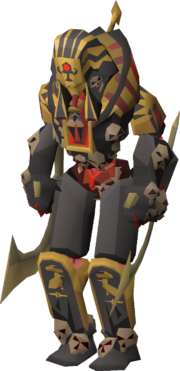
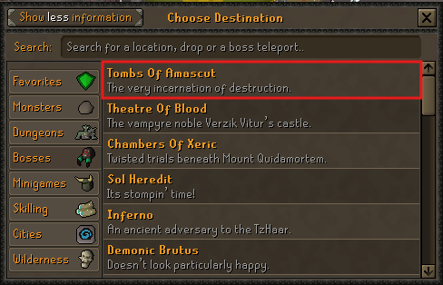
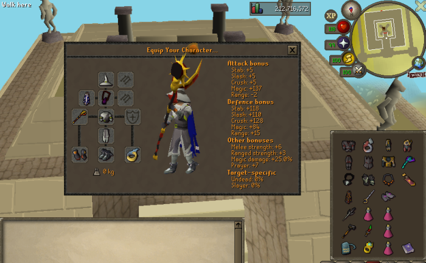
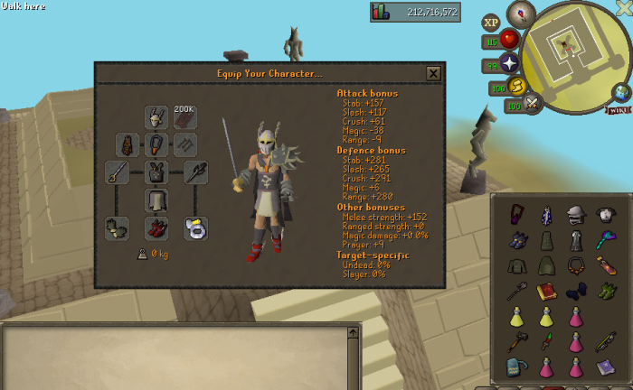
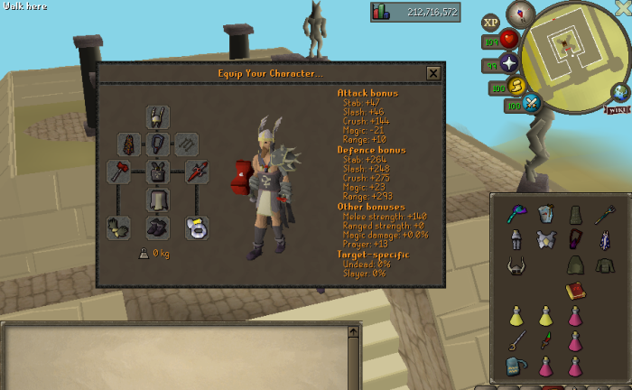
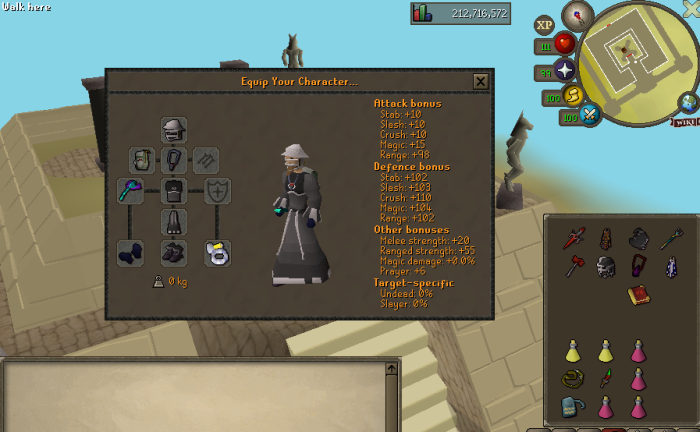
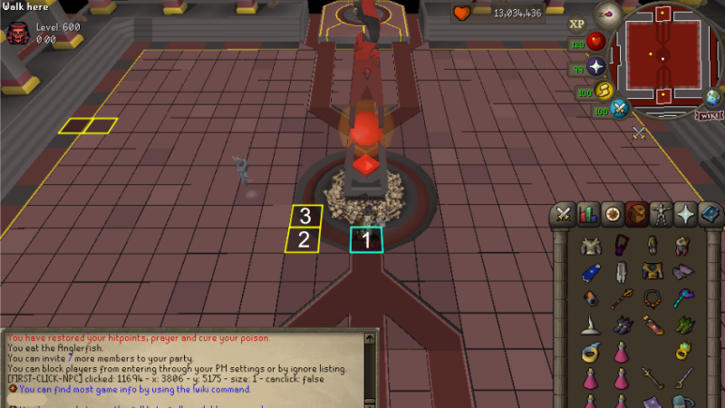
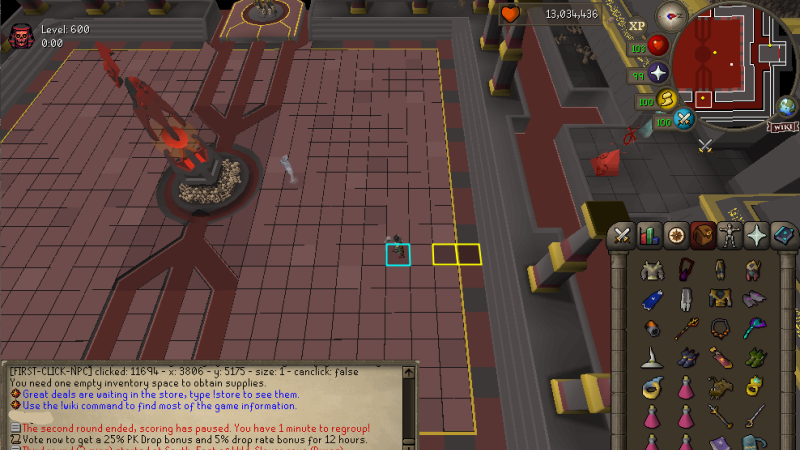

IMPACT WARDENS ENCOUNTER
Impact Tombs of Amascut Guide: Wardens, Gear and Invocations
Impact Tombs of Amascut centres on the Wardens encounter. Choose an invocation level that fits your setup, learn the Phase 1 and Phase 2 positions, and understand the prayers, core and floor mechanics before moving into harder raids.

- Access
- Spirit Tree at
::home - Category
- Bosses
- Main encounter
- Wardens
- Suggested start
- 150 invocation
- Levels covered
- 150, 300, 450 and 600
- Core skills
- Movement, prayer and switches
CURRENT TELEPORT ROUTE
How to Get to Tombs of Amascut
The supplied Spirit Tree screenshot shows Tombs Of Amascut inside the Bosses category. Use this route instead of looking for a generic raids teleport.
- Teleport to
::home. - Use the Spirit Tree.
- Open the Bosses category.
- Select Tombs Of Amascut.
- Enter the raid area and speak to the NPC beside the entrance.

PACK FOR THE MECHANICS
What to Bring Before Entering
The screenshots are setup examples, not fixed shopping lists. Build around the mechanics first, then use spare space for upgrades and comfort.
Cover every required response
- Liquid Adrenaline for the documented opening special sequence
- A defence-lowering special weapon
- A melee weapon for the core and red skulls
- A ranged or magic option for the obelisk and Warden
- A harder-hitting weapon for the final core hit when used
Match the tier you can control
- Dragon Dagger for the documented core sequence outside 600s
- Compact melee, ranged and magic switches
- Food, Saradomin brews and prayer restoration
- Combat boosts that match your selected styles
- Runes, ammunition and charged equipment where required
Add comfort after consistency
- Higher-tier weapons and armour
- Extra switches that do not cost mechanic awareness
- Additional sustain for longer learning attempts
- Pre-agreed team roles and attack order
- One inventory plan shared before the raid starts
FOUR DOCUMENTED SETUP TIERS
Impact ToA Gear and Inventory Examples
Impact's Wiki presents four examples from high-level gear to budget Void. The images below preserve the equipment, bonuses, inventory and visible quantities from the supplied screenshots; only the lower username strip was cropped.
| Setup | Account stage | Combat approach | Switching | Supply tolerance | Invocation use | Main limitation |
|---|---|---|---|---|---|---|
| High-level | Endgame | Strong options across phases | High | Best damage margin | High raids, including documented 600 change | Expensive and mechanically demanding |
| Medium/high | Established | Strong main weapons with practical switches | Medium-high | Good with clean execution | Normal to higher raids | Slower phases than the top setup |
| Medium | Progressed | Accessible multi-style coverage | Medium | Moderate | Normal and moderate raids | Longer exposure to mechanics |
| Budget Void | Entry | Void-based style switching | Lower gear cost | Least defensive margin | Learning and lower raids | Mistakes consume supplies quickly |
Endgame accounts
High-level setup

- Main approach
- Use the strongest documented ranged or magic option for the obelisk and Warden, with a planned melee core sequence.
- Important switches
- Defence-lowering special, combat-style switches, core weapon and a melee option for red skulls.
- Inventory focus
- Liquid Adrenaline, boosts, restoration and enough healing for the selected invocation.
- Strength
- The best damage margin of the four documented tiers.
- Limitation
- More switches still create more opportunities to miss a prayer or movement cue.
- Documented alternative
- For 600 invocation, remove the Dragon Dagger and bring a Keris with the Sun Jewel attached.
Established accounts
Medium/high-level setup

- Main approach
- Keep reliable damage in each required phase and arrive at the core with the melee plan ready.
- Important switches
- Use only the armour and weapon switches you can change without missing the next attack.
- Inventory focus
- Balance combat tools with enough food, prayer restoration and boosts for longer phases.
- Strength
- Capable of higher invocations when prayers and movement are consistent.
- Limitation
- Lower damage than the high-level example can increase supply pressure.
- Documented alternative
- Use the Wiki's listed weapon priorities as a guide, not as a requirement to copy every visible item.
Progressed accounts
Medium-level setup

- Main approach
- Use practical multi-style coverage and spend attention on prayer and movement rather than extra switches.
- Important switches
- Keep the defence-lowering, Warden and core tools in consistent inventory positions.
- Inventory focus
- Carry additional sustain when lower damage means more mechanics per phase.
- Strength
- A realistic bridge between budget learning and high-level runs.
- Limitation
- Longer phases leave more chances to miss beams, projectiles or floor cues.
- Documented alternative
- The Wiki ranks Tumeken's Shadow, Twisted Bow and Blowpipe for Phase 3; use the strongest listed option available to you.
Entry accounts
Budget Void setup

- Main approach
- Use Void to cover style changes with fewer armour pieces while learning the encounter.
- Important switches
- Prioritise the weapons required for the obelisk, core, red skulls and Warden damage.
- Inventory focus
- Protect space for sustain; budget damage can make every phase last longer.
- Strength
- Accessible entry point for learning the documented mechanics.
- Limitation
- Lower defence and damage make missed prayers and movement more costly.
- Documented alternative
- Upgrade the repeated bottleneck shown by your runs instead of replacing the whole setup at once.
DOCUMENTED IMPACT PRESETS
Invocation Recommendations for 150, 300, 450 and 600
Start at 150 while learning the tiles and prayers. Move to 300 or higher only when you can finish each phase without draining your supplies. A listed combination does not guarantee completion.
Approachable listed start
- Sprint for It
- Quiet Prayers
- Deadly Prayers
Standard documented list
- Sprint for It
- Quiet Prayers
- Deadly Prayers
- Ancient Haste
- Acceleration
- Penetration
- Overclocked
- Overclocked 2
Alternative 300 with Insanity
Jog for It, Quiet Prayers, Deadly Prayers, Overclocked, Overclocked 2 and Insanity.
Higher documented list
- Sprint for It
- Quiet Prayers
- Deadly Prayers
- On a Diet
- Ancient Haste
- Acceleration
- Penetration
- Overclocked
- Overclocked 2
- Insanity
All available invocations
Enable every available invocation and use Sprint for It as the time invocation.
THE ENCOUNTER AT A GLANCE
Wardens Fight Overview
OBELISK POSITIONING
Move from Tile 1 to Tiles 2 and 3
Open with Liquid Adrenaline and a defence-lowering special attack, then switch to the ranged or magic setup you chose for the obelisk. The Wiki lists Tumeken's Shadow first and Blowpipe second for this part of the fight.
- Drink one dose of Liquid Adrenaline.
This halves the special-attack cost for the documented opening.
- Use a defence-lowering special attack.
The Wiki names Elder Maul, Dragon Warhammer and Bandos Godsword as examples.
- Switch to ranged or magic.
Use the selected obelisk weapon after the special attack lands.
- Block the obelisk on Tile 1.
One player remains there until taking 30 damage.
- Move to Tile 2.
Move only after the documented 30 damage has been taken.
- Move to Tile 3 after the first UFO set.
Watch the first UFO appearance rather than moving early.
- Alternate between Tiles 2 and 3.
Continue avoiding UFO attacks until the obelisk dies.

WARDEN POSITIONING
Use the Two Marked Positions as a Short Movement Path
The cyan and yellow outlines mark two adjacent positions near the eastern wall. The Impact Wiki does not assign a different permanent function to each colour. Choose either one as your starting position; the other becomes the adjacent movement tile when Imprisonment targets where you were standing.

Start on either marked position. Treat it as the primary tile for that attack cycle.
Move to the adjacent marker for Imprisonment. The dark shot targets your last position.
Return or alternate after the attack resolves. The tile you left can become the next destination.
Leave both markers when required. Converging Beam, Lightning Skull and other area cues still need their own response.
Basic prayer response
Red-skull attack
Use Protect from Magic.
Normal-skull attack
Use Protect from Missiles.
Inside melee distance
Use Protect from Melee.
Warden special attacks
Above 55% HP
Divine Projectile
Your prayers are disabled before the Warden fires a style-specific projectile. Identify it and reactivate the matching protection:
- Red scimitar: melee
- White arrow: ranged
- Blue spell: magic
Below 55% HP
Imprisonment
A dark shot targets your last position. Move to the adjacent marked tile. If hit, you are frozen, but the Wiki says you can still eat and use prayer.
Obelisk special attacks
Red lightning warning
Converging Beam
Beams appear north and south, then east and west. Move to the opposite quadrant. Running through a beam when it is two tiles away is a documented advanced timing option, not the beginner default.
Orange lightning warning
Windmill Beam
Rotating beams move clockwise after the floor briefly glows. Move with the rotation or use the two marked positions, which the Wiki documents as avoiding this attack.
Yellow lightning warning
Lightning Skull
The attack covers a 7×7 area. Two tiles in each straight direction remain safe. If caught inside the area, the Wiki describes running toward the centre as it lands.
LIMITED DAMAGE WINDOWS
Prepare the Warden Core Sequence Before It Appears
The core emerges when the Warden reaches zero HP. The Wiki gives example hit sequences for sufficiently strong gear, but weapon speed, damage and execution determine the result. A two-cycle core is not guaranteed.
Open with special attacks
- Five Dragon Dagger special attacks
- One Godsword or Elder Maul hit
Adjust to remaining health
- Two or three Dragon Dagger specials
- Four or five Rapier or Abyssal Tentacle hits
- Finish with a Godsword or Elder Maul hit
Use the documented fallback
- Five Rapier or Whip hits
- Finish with a Godsword or Elder Maul hit
Use the eight-hit window
- Seven Rapier or Abyssal Tentacle hits
- One final hit with the harder-hitting weapon
FLOOR, SKULLS AND PHANTOMS
Follow the Slam Pattern and Solve Each Interruption
Use an optional defence-lowering special attack at the start where possible. For Impact Phase 3, the Wiki lists the weapon priority as Tumeken's Shadow, then Twisted Bow, then Blowpipe.
Floor-slam pattern
The sequence normally resets after each red-skull set. With Insanity active, it continues from the point where it stopped instead of returning to step one.
Priority interruption
Red skull attack
Equip a melee weapon and destroy every red skull quickly. The Wiki says there is no hit delay when attacking them; failing to clear them causes extreme damage.
Phantom Akkha
Read the projectile
A spike projectile means ranged; a red projectile means magic. Akkha strikes the staff against the ground before changing attack style.
Phantom Kephri
Move off the shadow
Kephri uses magic attacks. When a shadow appears beneath you, leave that tile before the projectile lands on your previous position.
APPROXIMATELY 5% HP
Keep Moving Through the Warden Enrage
The Wiki places enrage at about 5% HP, or roughly 100 HP. These are approximate indicators, not an exact timer.
- Keep moving.
- Watch the floor shadows.
- Avoid red lightning.
- Move forward as tiles disappear.
- Continue attacking when the route is clear.
- Do not block a teammate's movement.
FIX THE CAUSE OF THE WIPE
Common Impact ToA Mistakes
- Starting too high: learn the base tiles and prayers before adding difficult invocations.
- Forgetting Liquid Adrenaline: the documented Phase 1 opener depends on it.
- Leaving Tile 1 early: wait for the documented 30 damage before moving.
- Missing the UFO transition: move from Tile 2 to Tile 3 after the first set appears.
- Stacking for the wrong orb: standing together only reduces the documented first orb.
- Treating the Phase 2 markers as universal safety: beams, lightning and prayers still require reactions.
- Standing still during Imprisonment: move because it targets your previous position.
- Not reactivating prayer: Divine Projectile disables protection before showing its attack style.
- Wasting the core window: equip the melee sequence before the core appears.
- Losing the slam sequence: remember that Insanity prevents the normal reset.
- Forgetting a melee weapon: red skulls need to be cleared quickly.
- Copying the screenshot blindly: understand why each switch and supply is present.
BEFORE STARTING THE RAID
Impact ToA Pre-Raid Checklist
FAQ
Impact Tombs of Amascut Questions
How do I get to Tombs of Amascut in Impact?
Teleport to ::home, use the Spirit Tree, open Bosses and select Tombs Of Amascut. At the raid entrance, speak to the nearby NPC before entering.
Which invocation level should I start with?
Start at the documented 150 invocation combination while learning the tiles, prayers and core. Move to 300 or higher only when the base mechanics no longer drain your supplies.
What is the recommended 150 invocation setup?
The Impact Wiki lists Sprint for It, Quiet Prayers and Deadly Prayers for 150 invocation. The list is a recommendation, not a completion guarantee.
What gear can I use for Impact ToA?
Impact documents high-level, medium/high-level, medium-level and budget Void examples. Use the tier your account can sustain while keeping the required melee, ranged or magic options and enough supplies.
What do Tiles 1, 2 and 3 do in Phase 1?
One player blocks the obelisk on Tile 1 until taking 30 damage, moves to Tile 2, then moves to Tile 3 after the first UFO set. Continue alternating between Tiles 2 and 3 until the obelisk dies.
What are the marked positions in Phase 2?
They are two adjacent positions used to simplify movement and alternate away from Imprisonment. The Wiki does not assign a unique role to the cyan or yellow marker, and neither position protects you from every attack.
Which prayer should I use in Phase 2?
Use Protect from Magic for the red-skull attack, Protect from Missiles for the normal-skull attack and Protect from Melee while in melee distance. Divine Projectile disables prayers, so reactivate the protection matching its projectile.
How do I avoid Imprisonment?
Move from your current marked position to the adjacent one because Imprisonment targets your last position. If it hits, you are frozen but can still eat and pray.
How do I damage the Warden core efficiently?
Prepare the melee switch before the core appears and follow a weapon-speed sequence your setup can execute. The Wiki provides Dragon Dagger, Rapier or Abyssal Tentacle and Godsword or Elder Maul examples, but does not guarantee a two-cycle result.
What is the Phase 3 floor-slam pattern?
The documented pattern is right of centre, left of centre, then centre. It normally resets after each red-skull set, but Insanity makes it continue from where it stopped.
What happens during the Warden enrage phase?
At approximately 5% HP, or roughly 100 HP, the Warden heals 20%, gains high defence and adds lightning while phantom attacks remove floor tiles. Keep moving and attack only when your route is clear.
OPTIONAL EQUIPMENT UPGRADE
Learn the Fight Before Pricing Upgrades
Mechanic knowledge matters more than copying every item in a screenshot. Once your runs show a repeated equipment or supply bottleneck, check the current Impact price and stock.
Official sources, screenshots and verification
Setup tiers, invocation lists and Wardens mechanics were checked against the Impact Wiki Tombs of Amascut page. The current access route was checked against the supplied Spirit Tree menu, and the Phase 1 and Phase 2 positions were illustrated with supplied in-game screenshots. Content reviewed July 26, 2026.
The cyan and yellow Phase 2 markers are treated as two interchangeable adjacent positions because the Wiki does not give the colours separate named roles. Gear screenshots are examples rather than mandatory inventories. RSPS Gold Hub is independent and is not affiliated with or approved by Impact.